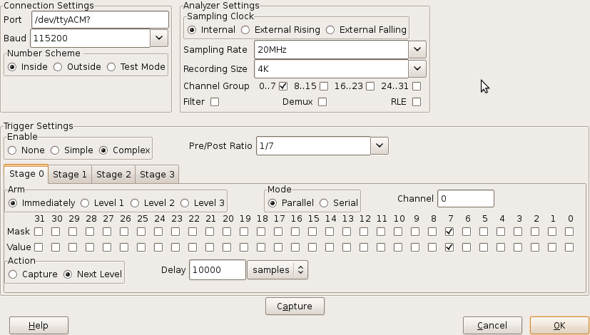

logic_sniffer.py
SUMP Settings
Specific settings for the SUMP device are controlled from the Device Settings dialog:

The various fields are:
Analyzer Settings
- Sampling Clock
- Selects the source of the clock:
- Internal
- uses the clock generated internally by the SUMP device.
- External Rising
- uses a clock signal connected to the CKI pin, clocking on the rising edge.
- External Falling
- uses a clock signal connected to the CKI pin, clocking on the falling edge.
- Sampling Rate
- selects a rate for the internal clock to generate.
- Recording Size
- selects the number of samples to record.
- Channel Group
- causes the checked channel groups to be recorded.
- Filter
- enables internal noise filtering when checked.
- Demux
- enables double-speed recording when checked.
- RLE
- enables Run-Length-Encoded data transmission when checked.
Trigger Settings
- Enable
- None
- recording begins as soon as "capture" is clicked.
- Simple
- Starts recording based on a single trigger signal configured in "Stage 0".
- Complex
- Starts recording based on a combination of triggers in Stages 0..3 .
- Pre/Post Ratio
- ratio of samples that will be recorded before and after the trigger firing.
- Stage 0 .. 3
- These trigger stages can be combined in various ways
- Arm
- Immediately
- the stage is armed and begins testing inputs as soon as the sampling run starts.
- Level 1 .. 3
- the stage will be armed after the specified trigger Level is set by another stage.
- Mode
- Parallel
- the associated Trigger Mask and Trigger Values are tested in parallel against the respective input channels.
- Serial
- the associated Trigger Mask and Trigger Values are tested against successive values from one of the input channels.
- Channel
- specifies the input channel to use for Serial trigger mode. A channel number from 0 to 31 may be specified.
- Mask
- check the channels (in parallel mode) or successive samples (in serial mode) to be tested by this trigger.
- Value
- checked channels (in parallel mode) or successive samples (in serial mode) must be read as 1 for the trigger to fire. Un-checked values must read as 0.
- Action
specifies the action to take when this trigger fires:
- Capture
- begin recording.
- Next Level
- advance the trigger level by one to arm another stage.
- Delay
- delays a given number of clock cycles between the trigger firing and the specified Action.
From 0 to 65,535 samples may be specified.
For convenience this delay can be entered as a sample count, or a time in seconds.
Control Buttons
- Capture
- arms trigger stages and begins a recording run.
- OK
- accepts the SUMP configuration to be used in a later recording run.
- Cancel
- throws away the values entered with no further action.